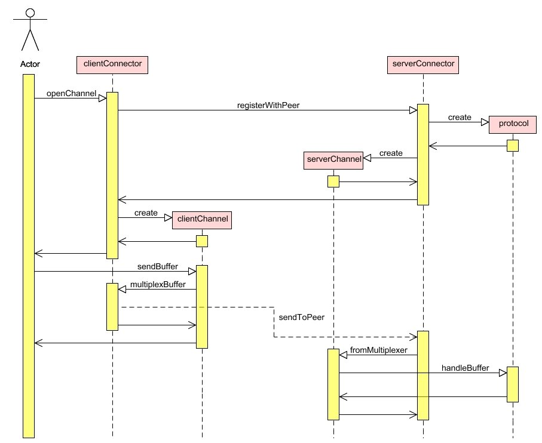

The Net4j transport layer.
The four main interfaces of the transport layer are
{@link org.eclipse.net4j.buffer.IBuffer},
{@link org.eclipse.net4j.channel.IChannel},
{@link org.eclipse.net4j.connector.IConnector} and
{@link org.eclipse.net4j.protocol.IProtocol}.
Sequence Diagram: Communication Process
